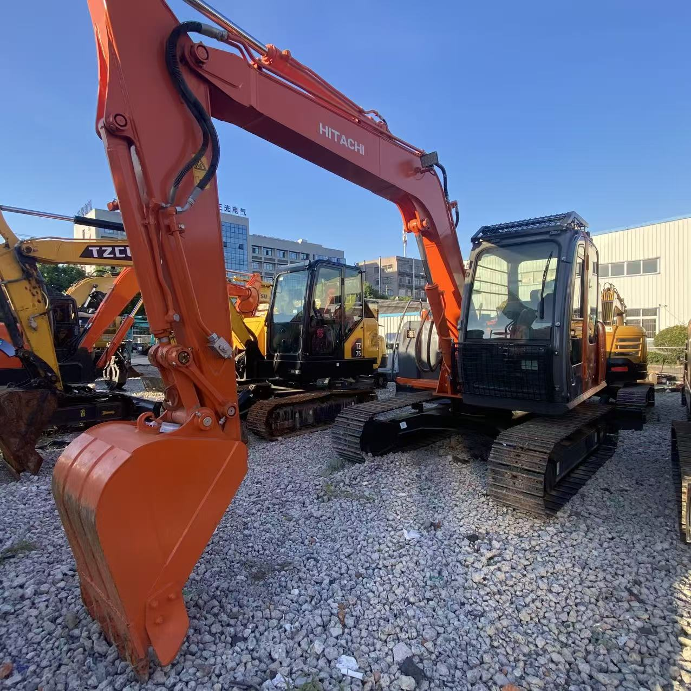

Refurbished Hitachi Zaxis 120 Excavator
The Hitachi Zaxis 120 Excavator is a compact yet robust machine designed for a wide range of applications, including construction, demolition, landscaping, and material handling. Known for its fuel efficiency, smooth operation, and reliable performance, the Zaxis 120 delivers outstanding results in both urban and rural job sites. When refurbished, the Zaxis 120 offers all the performance of a new machine, but at a significantly lower cost, making it an excellent investment for businesses on a budget.
Honestly, it's almost impossible to buy a brand new excavator from China. They either don't exist or are made in China. If a Chinese seller tells you their Caterpillar/Komatsu/Volvo/Kobelco/Hitachi is brand new, they're lying. Therefore, a refurbished excavator is your best bet.

Here are the detailed specifications for a refurbished Hitachi Zaxis 120 excavator (ZX120-3 or ZX120-5G)—ideal for your technical documentation and comparative spec work:
Operating Weight and Dimensions
- Operating Weight: ~11,800–12,300 kg
- Transport Length: ~7.6–7.8 meters
- Transport Width: ~2.49 meters
- Transport Height: ~2.75–2.85 meters
- Tail Swing Radius: ~2.2–2.4 meters
- Track Width: 500 mm standard
- Undercarriage: Long carriage (LC) configuration
Engine and Powertrain
- Engine Model: Isuzu BB-4BG1T or AR-4JJ1X (depending on build year)
- Rated Power Output:
- Tier 2 version: ~66 kW (88.5 hp) @ 2,200 rpm
- Tier 3/Stage IIIA version: ~73 kW (98 hp) @ 2,000 rpm
- Fuel Tank Capacity: ~250 liters
- Travel Speed: ~3.5–5.5 km/h
- Swing Speed: ~11 rpm
- Drive Type: Hydrostatic with planetary final drives
Hydraulic System
- Main Pump Type: Dual axial piston pumps with HIOS III hydraulic system
- Flow Rate: ~2 × 160–180 L/min
- System Pressure: Up to 31.4–34.3 MPa
- Hydraulic Oil Capacity: ~200–250 liters
- Efficiency Features:
- Boom regenerative circuit
- Swing priority valve
- Auto hydraulic warm-up
- Fuel-saving ECO mode
Performance Metrics
- Bucket Capacity: ~0.5–0.6 m³ (SAE heaped)
- Max Digging Depth: ~5.5–5.8 meters
- Max Reach (Horizontal): ~8.5–9.0 meters
- Max Dump Height: ~6.0 meters
- Bucket Digging Force: ~95–105 kN
- Arm Digging Force: ~70–80 kN
Cab and Operator Features
- Cab Type: ROPS/FOPS certified
- Display: LCD monitor with diagnostics and ECO gauge
- Controls: Pilot-operated joysticks with auxiliary hydraulic circuit
- Comfort: Adjustable seat, HVAC, low-noise cab
- Visibility: Wide glass area, LED work lights, optional rear-view camera
Attachments Compatibility
- Standard Bucket: ~0.5–0.6 m³
- Optional Tools: Hydraulic breaker, demolition shear, ripper, compactor
- Quick Coupler: Hydraulic or manual quick hitch
Refurbishment Scope
Refurbished ZX120 units typically include:
- Engine Overhaul: Turbocharger, injectors, cooling system
- Hydraulic Restoration: Pump recalibration, valve block testing, hose replacement
- Electrical Diagnostics: Monitor, sensors, wiring harness
- Cab Reconditioning: Seat, joysticks, HVAC, repainting
- Structural Repairs: Boom/bucket welding, bushing replacement, undercarriage rebuild
Overview of the Hitachi Zaxis 120 Excavator
The Hitachi Zaxis 120 is a mid-sized, tracked hydraulic excavator designed for maximum versatility. Its compact size makes it perfect for working in tight spaces, while its powerful engine and efficient hydraulics allow it to perform tasks usually reserved for larger excavators. Whether it's trenching, grading, digging, or material handling, the Zaxis 120 excels in all of these applications.
Refurbishing the Zaxis 120 involves replacing worn-out components, restoring the machine to factory specifications, and ensuring its reliability for years to come. Refurbished units are often a cost-effective alternative to new models, providing the same capabilities at a fraction of the price.
Key Specifications of the Hitachi Zaxis 120 Excavator
The Zaxis 120 provides a perfect balance between power, size, and versatility, making it ideal for both light and medium-duty tasks. Here are the key specifications:
-
Operating Weight: Approximately 12,000 - 13,500 kg (26,455 - 29,762 lbs)
-
Engine Power: 92 hp (69 kW)
-
Max Digging Depth: Up to 5.5 meters (18.04 feet)
-
Maximum Reach: 8.1 meters (26.6 feet)
-
Bucket Capacity: Typically 0.4 - 0.6 cubic meters (14 - 21 cubic feet)
-
Fuel Tank Capacity: Around 180 - 210 liters (47 - 55 gallons)
-
Travel Speed: Up to 5.5 km/h (3.4 mph)
These specifications give the Zaxis 120 the versatility to perform a wide range of tasks while remaining efficient and economical. Whether you're working on tight urban sites or larger projects, the Zaxis 120 delivers reliable performance.
Performance and Efficiency of the Zaxis 120
The Zaxis 120 is engineered for exceptional performance and fuel efficiency. Its hydraulic system ensures that operators can maintain precise control over the boom, arm, and bucket, making it perfect for a variety of tasks, from digging trenches to moving materials.
Performance Highlights:
-
High-Performance Hydraulics: The Zaxis 120 comes equipped with a powerful hydraulic system that enables smooth operation and fast cycle times. This system ensures precise control of the excavator, enhancing productivity and accuracy when working with materials or performing grading tasks.
-
Fuel Efficiency: One of the key advantages of the Zaxis 120 is its fuel-efficient engine. Designed to reduce fuel consumption while maintaining power, it helps businesses save on operational costs without sacrificing performance.
-
Impressive Digging and Lifting: Despite its compact size, the Zaxis 120 is capable of digging to impressive depths and handling large loads. Its efficient hydraulic system provides the muscle needed for tough excavation and material handling tasks.
-
Responsive Control: The Zaxis 120 offers exceptional operator control, ensuring smooth and easy handling. Its controls are highly responsive, making it easier for operators to perform detailed work with accuracy and confidence.
Durability and Longevity of the Zaxis 120
Hitachi is known for building durable machinery, and the Zaxis 120 is no exception. Built with high-quality materials and designed for long-lasting performance, this excavator is made to withstand the demands of tough working conditions.
Durability Features:
-
Reinforced Undercarriage: The Zaxis 120 is equipped with a durable undercarriage that is capable of withstanding the rigors of uneven terrain and rough operating conditions. Its tracks, rollers, and sprockets are designed for extended wear, ensuring smooth operation even on challenging job sites.
-
Engine Longevity: Powered by a reliable engine, the Zaxis 120 is built to perform for thousands of hours of service. Regular maintenance helps extend the life of the engine, allowing it to continue delivering top-notch performance for years.
-
Hydraulic System Durability: The hydraulic system of the Zaxis 120 is engineered for long-term performance, even under high pressures. Its components are built to last, helping reduce downtime and increasing overall productivity.
Comfort and Safety of the Zaxis 120
Operator comfort and safety are critical components of the Zaxis 120’s design. The machine is equipped with an ergonomic cabin, noise and vibration reduction features, and several safety systems to enhance the operator's experience and ensure safety on the job.
Comfort and Safety Features:
-
Spacious and Ergonomic Cabin: The cabin of the Zaxis 120 is designed to maximize operator comfort. It features an adjustable seat, user-friendly controls, and excellent visibility, making it easy for operators to work for extended periods without fatigue.
-
Noise and Vibration Reduction: The cabin is built to reduce noise and vibrations, ensuring a quieter and more comfortable operating environment. This feature helps operators stay focused and productive throughout the day.
-
Safety Features: The Zaxis 120 is equipped with Roll Over Protection (ROPS) and Falling Object Protection (FOPS) to safeguard the operator in hazardous environments. The machine’s low center of gravity also provides increased stability when working on uneven terrain.
Versatility and Attachments for the Zaxis 120
The Zaxis 120 is a highly versatile machine that can be adapted to a variety of applications with the right attachments. Whether you're digging, grading, lifting, or demolishing, the Zaxis 120 can handle it all.
Common Attachments for the Zaxis 120:
-
Buckets: The Zaxis 120 can be fitted with general-purpose, heavy-duty, or grading buckets, depending on the application. These typically range from 0.4 to 0.6 cubic meters (14 - 21 cubic feet), making them perfect for digging, material handling, and grading.
-
Hydraulic Breakers: For demolition tasks, the Zaxis 120 can be equipped with a hydraulic breaker, allowing it to break concrete, rock, and other hard materials with ease.
-
Augers: Auger attachments are ideal for drilling precise holes for foundations, posts, or other applications requiring deep, narrow holes.
-
Grapples: The Zaxis 120 can be fitted with grapple attachments for lifting and handling materials like logs, scrap metal, and debris.
-
Quick Couplers: Quick couplers allow operators to easily change between attachments without needing to leave the operator’s seat, minimizing downtime and improving overall productivity.
Benefits of Purchasing a Refurbished Hitachi Zaxis 120 Excavator
Buying a refurbished Zaxis 120 provides businesses with several advantages over purchasing a new machine, particularly for those looking to reduce equipment costs while maintaining high-quality performance.
Key Benefits:
-
Cost Savings: Refurbished Zaxis 120 units are significantly more affordable than new models, providing a cost-effective solution without compromising on performance. Refurbishing the machine restores it to factory specifications, ensuring reliability and longevity.
-
Thorough Inspection and Reconditioning: Refurbished units undergo a thorough inspection and reconditioning process, with all worn parts replaced with genuine Hitachi components. This process ensures that the machine is as reliable and efficient as a new unit.
-
Warranty: Many refurbished Zaxis 120 machines come with a warranty, offering peace of mind for businesses in case of any unexpected issues. This warranty ensures that the machine will continue to perform at its best after purchase.
-
Environmental Responsibility: Purchasing refurbished equipment is an environmentally friendly choice. It helps reduce waste by extending the life of existing machinery, contributing to sustainability in the heavy equipment industry.
Maintenance Tips for the Hitachi Zaxis 120 Excavator
To ensure the Zaxis 120 continues to perform efficiently and lasts for many years, regular maintenance is essential. Here are some key maintenance tips:
Maintenance Recommendations:
-
Engine Maintenance: Check and change the engine oil regularly, replace air filters, and monitor coolant levels to ensure the engine runs smoothly and avoids overheating.
-
Hydraulic System: Inspect hydraulic hoses for leaks, and replace hydraulic filters as needed. A clean hydraulic system ensures optimal performance and longevity.
-
Undercarriage: Regularly inspect the undercarriage for wear and tear, especially the tracks, sprockets, and rollers. Timely replacement of damaged parts helps prevent further issues and ensures smooth operation.
-
Attachments: Inspect attachments such as buckets and grapples for damage or wear. Replace or repair worn parts to maintain efficiency and performance.
Conclusion
The Hitachi Zaxis 120 Excavator is a compact, powerful, and versatile machine that excels in a variety of tasks, from excavation and grading to demolition and material handling. Purchasing a refurbished Zaxis 120 provides a cost-effective way to obtain a high-quality machine that performs like new. With proper maintenance, the Zaxis 120 will continue to provide reliable service for many years, making it a valuable investment for any construction, landscaping, or material handling business.
Our Commitment
- 2 years / 4000 hours warranty.
- EPA certified.
- No sweatshop labor.
Contacts

- [email protected]
- Youtube Instagram Facebook
- Navigation: G206 (Sishu Bridge) in Changfeng County, Hefei City, Anhui Province, 200 meters north to the east